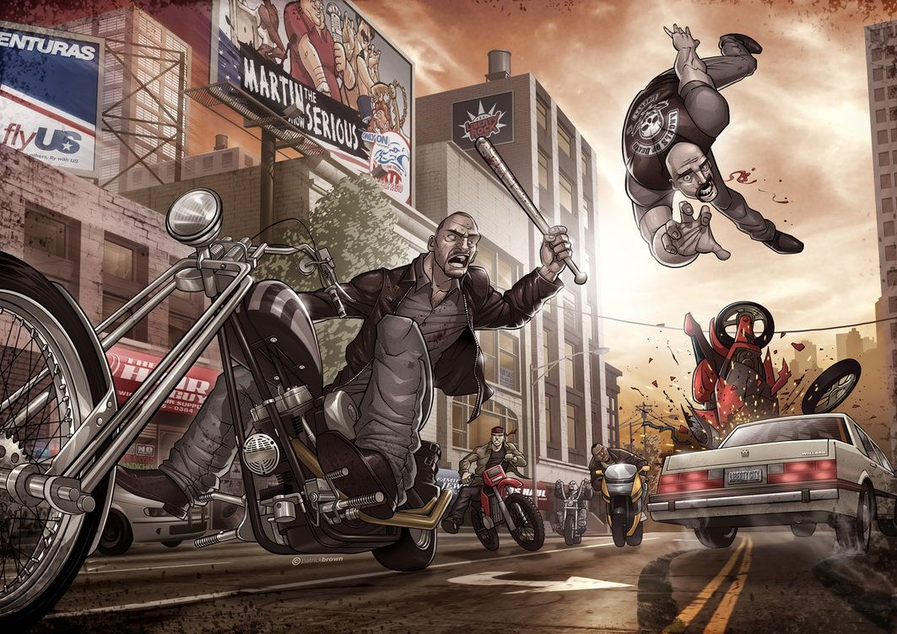

Hermanos de por vida, Lost para siempre
The Lost Motorcycle Club es un club de moteros que está establecido en Liberty City.

The Lost fue fundado en 1964 por 8 ex-soldados de Vietnam que se conocieron en Hanoi. Por esto, comenzaron el club y lo llamaron "The Lost" en recuerdo de todos sus colegas que murieron en la guerra.